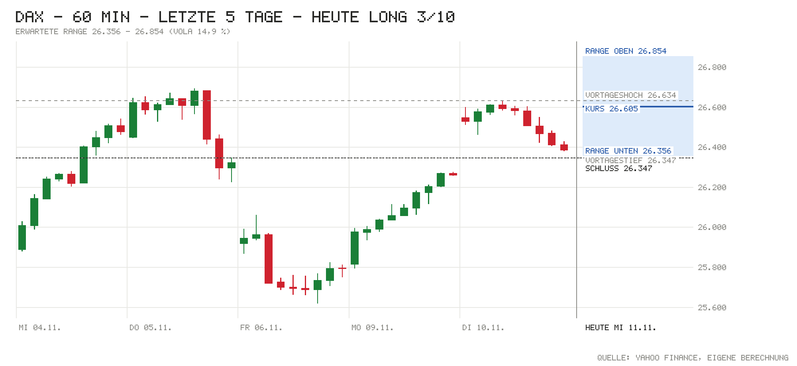

Tagesentscheidung ab 09:06 bis 17:30 Uhr
Für Long sprechen die drehenden US-Futures (Nasdaq 100 +1,33 % nach dem CoreWeave-Ausblick), starke Tech-Börsen in Asien (Nikkei +1,31 %), Siemens Energy mit Rekordjahr und 9 Mrd. € neuem Rückkauf (vorbörslich ca. +4,5 %) und ein ruhiger Kalender: In den USA ist Veterans Day, der Anleihemarkt bleibt geschlossen. Das wichtigste Gegenargument sind die Zinsen: Nach der heißen US-Inflation steht die 10J-Rendite bei 4,98 %, eine Fed-Erhöhung im Dezember ist voll eingepreist. Dazu ist die Lücke von +0,98 % schon gelaufen, und gestern scheiterte der DAX aus fast gleicher Lage am Rekordhoch (26.693) und schloss auf dem Tagestief. Darum nur 3/10.
- Kurs um 09:06
- 26.605
- Erwartete Range
- 26.356 – 26.854
- Eingepreist (Tagesoption)
- ±0,94 %
Einschätzung vom Kurs um 09:06 (Median der Indikationen L&S, J.P. Morgan, UBS) bis zum Xetra-Schluss. Range = ±1 σ für die restliche Handelszeit aus der DAX-Tagesoption (ca. 68 %). Keine Anlageberatung.
Chart

Signale
| Signal | Wirkung | Stand und Einordnung |
|---|---|---|
| Vorgaben USA | Rückenwind | Dienstag: S&P 500 −0,38 %, Nasdaq 100 −0,60 %, Dow −0,30 % nach heißer Inflation, Verluste zum Schluss verringert. Futures jetzt: S&P +0,57 %, Nasdaq +1,33 %, Dow +0,15 % – CoreWeave-Ausblick dämpft KI-Finanzierungssorgen. |
| Eröffnung & erste Minuten | Neutral | Indikation 26.605 (+0,98 % zum Xetra-Schluss 26.347); Eröffnung und Hoch/Tief zum Abruf noch n/v. Rekordhoch 26.693 nur 0,3 % entfernt – gestern kehrte der DAX genau dort um (eigene Einschätzung). |
| Asien & China | Rückenwind | Nikkei +1,31 %, Kospi +2,4 %, Shanghai +0,46 %, CSI 300 +0,41 %, Hang Seng −1,07 %. |
| Datenüberraschungen | Gegenwind | US-Verbraucherpreise Oktober: Kernrate +0,3 % m/m vs. Prognose 0,2 %, Gesamt +0,4 % vs. 0,3 %. Deutschland heute: Inflation 2,8 % bestätigt (−0,2 % m/m), wie erwartet. |
| Zinserwartung | Gegenwind | Fed 09.12.: 113 % für +25 Bp. – also schon ein Teil eines 50-Bp.-Schritts eingepreist; Waller schließt 50 Bp. nicht aus. EZB-Einlagensatz 2,50 %. |
| Renditen | Gegenwind | US 10J 4,98 % (offiziell, +12 Bp. zum Vortag), live 5,00 %. Bund 10J 3,30 % (−1 Bp.). Der US-Anstieg ist der Belastungsfaktor. |
| Kreditstress | Gegenwind | FRED n/v; Ersatz: HYG −0,43 %, LQD −0,75 % – leichter Druck durch die Zinsen, kein Stress. |
| Öl & Dollar | Neutral | Brent 92,22 USD (+0,80 %) belastet leicht; EUR/USD 1,1157 (−0,58 %) – der schwächere Euro hilft Exporteuren. |
| Trend | Neutral | Über 21-T. (25.714), 50-T. (25.563) und 200-T.-Schnitt (24.942). Großer Trend Bear seit 22.10., dreht bei Schluss über 26.600 auf Bull – die Indikation liegt genau auf der Schwelle. |
| Positionierung | Neutral | COT 03.11.: Hedgefonds im S&P-Future netto −372.318 (+28.286), Asset Manager +928.584. Kein Extrem. |
| Unternehmensnachrichten | Rückenwind | Siemens Energy vorbörslich ca. +4,5 % (Rekordjahr, Dividende 2,30 €, Rückkauf bis 9 Mrd. €). Brenntag −2,5 %, Eon −0,6 %, RWE kaum verändert. |
| Profi-Sicht | Gegenwind | ING: 5 % für die US-10J gerechtfertigt, Dezember-Erhöhung voll eingepreist; Dollar bleibt nahe Jahreshochs. |
| Termine bis 17:30 | Rückenwind | Kein großer Termin: Nagel 09:20, Lagarde 10:45; USA Veterans Day (Anleihemarkt geschlossen, Aktien handeln). |
Großer Trend (3-Monats-Momentum)
- Stand
- Bear
- Seit
- 22.10. (5 Wechsel in 3 Monaten)
- Schluss 10.11.
- +0,18 % vs. Zins +0,60 %
- Heute dreht es bei Schluss über
- 26.600 (jetzt +0,02 %)
Die Indikation von 26.605 liegt nur 5 Punkte über der Schwelle: Hält der DAX das Niveau bis zum Schluss, wird das Signal ab heute Bull. Bull = Rendite der letzten 3 Monate über dem Geldmarktzins, Bear = darunter. Regel: Rendite der letzten 63 Handelstage (≈ 3 Monate) gegen den EZB-Einlagensatz, jeden Tag zum Schluss neu entschieden, Zeitrahmen Tageskerzen (nach Antonacci 2014, dort monatlich über 12 Monate; täglich entschieden dreht es öfter falsch). Keine Anlageberatung.
Bilanz von gestern
10.11.: Long 3/10 – Richtung falsch, −193 Punkte (Kurs zur Notiz 26.540, Schluss 26.347, Hoch 26.634, Tief 26.379). Range ±240 um den Kurs zur Notiz getroffen (Bewegung −193); bisher 60 % von 5 Tagen getroffen (Soll ca. 68 %). Gesamt seit Start: 5 Einschätzungen, Richtung richtig 20 %, Summe −526 Punkte bis Schluss (Schnitt −105).
Marktlage
| Markt | Stand | Veränderung |
|---|---|---|
| DAX (Schluss 10.11.) | 26.347,45 | +0,31 % |
| DAX (Eröffnung heute) | n/v | n/v |
| DAX (jetzt, Kurs zur Notiz 09:06) | 26.605 | +0,98 % |
| S&P 500 (Schluss 10.11.) | 7.520,93 | −0,38 % |
| Nasdaq 100 (Schluss 10.11.) | 27.740,79 | −0,60 % |
| Dow Jones (Schluss 10.11.) | 52.231,89 | −0,30 % |
| US-Futures (S&P / Nasdaq) | 7.587,25 / 28.204,75 | +0,57 % / +1,33 % |
| Nikkei 225 | Eröffnung 60.525 → Schluss 61.249 | +1,31 % |
| Shanghai Composite | Eröffnung 3.656 → Schluss 3.681 | +0,46 % |
| CSI 300 | Eröffnung 4.049 → Schluss 4.076 | +0,41 % |
| Hang Seng | Eröffnung 24.354 → aktuell 24.295 | −1,07 % |
| EUR/USD | 1,1157 | −0,58 % |
| Brent (USD/Barrel) | 92,22 | +0,80 % |
| Gold (USD/Unze) | 4.067,10 | +0,92 % |
| VIX (Schluss 10.11.) | 19,46 | −2,31 % |
China: Festland-Börsen drehten nach schwächerem Start ins Plus, getragen von der Tech-Erholung nach den CoreWeave-Zahlen (dpa-AFX); Hongkong blieb zurück. Farben bei Brent und VIX nach Wirkung auf Aktien. DAX-Eröffnung lag zum Datenabruf (Yahoo, bis 15 min verzögert) noch nicht vor. USA: Veterans Day, Anleihemarkt geschlossen, Aktienbörsen geöffnet.
Anleihen & Zinsen
| Markt | Stand | Veränderung |
|---|---|---|
| Bund 2J | 3,07 % | +6 Bp. (vs. Bundesbank 10.11.: 3,01 %) |
| Bund 10J | 3,30 % | −1 Bp. |
| US-Treasury 2J | 4,73 % (offiziell 10.11.) / 4,75 % (live) | n/v |
| US-Treasury 10J | 4,98 % (offiziell 10.11.) / 5,00 % (live) | +12 Bp.; 1 Woche: +3 Bp. |
| Fed, Sitzung 09.12. | Erhöhung um 25 Bp. erwartet | 113 % (Rest: Chance auf 50 Bp.) |
| EZB-Einlagensatz | 2,50 % | zuletzt +25 Bp. (16.09.) |
| Euro-Hochzins-Aufschlag | n/v (FRED) | n/v |
| US-Hochzins (Ersatz: HYG) | 77,18 USD | −0,43 % (Tag) |
Termine heute
- 07:00 Quartalszahlen: Siemens Energy (GJ 2026, Ausblick 2027), Eon (9 Monate), RWE (9 Monate), Brenntag (Q3)
- 08:00 Deutschland: Verbraucherpreise Oktober (endgültig) – Ist 2,8 % j/j, −0,2 % m/m vs. Prognose 2,8 % / −0,2 % · zuvor 3,3 %
- 09:20 Bundesbank-Präsident Nagel spricht
- 10:45 EZB-Präsidentin Lagarde spricht
- 13:00 USA: MBA-Hypothekenzins 30 Jahre – zuvor 7,30 %
- ganztags USA: Veterans Day (Anleihemarkt geschlossen); Spanien: Generalstreik; Auktion 30- und 21-jähriger Bunds (2,5 Mrd. €)
Nachrichten zu DAX-Werten
- Siemens Energy: Rekordjahr 2025/26: vergleichbarer Umsatz +15,5 % auf 44,2 Mrd. €, Nettogewinn 4,1 Mrd. € (Vorjahr ca. 1,7 Mrd. €); Dividende 2,30 € (Vorjahr 0,70 €); Rückkauf um bis zu 9 Mrd. € bis Ende GJ 2030 ausgeweitet. 2026/27: Umsatz +14–16 %, Marge 14–16 %, Nettogewinn ca. 5 Mrd. €. Tradegate ca. +4,5 %. Einschätzung: positiv; laut Berichten liegt das Gewinnziel 2027 eher unter hohen Erwartungen, die Kapitalrückgabe überwiegt aber.
- RWE: Starker Energiehandel auch im Q3, bereinigtes Ebitda nach neun Monaten überraschend hoch; 2026 im oberen Bereich der Spannen erwartet. Kaum verändert. Einschätzung: leicht positiv.
- Eon: Bereinigtes Ebitda nach neun Monaten bei 7,1 Mrd. € nahezu stagniert, Investitionspläne bestätigt; vorbörslich −0,6 %. Einschätzung: leicht negativ.
- Brenntag: Zuwächse im Q3, Ergebnisziel 2026 nun am oberen Ende der Spanne; dennoch vorbörslich −2,5 %. Einschätzung: leicht negativ, Gewinnmitnahmen nach der Vorlage (eigene Einschätzung).
- SAP, Infineon und Tech: Keine eigenen Nachrichten; der CoreWeave-Ausblick und nachlassende Sorgen über KI-Regulierung stützen den Sektor. Einschätzung: positiv für heute (eigene Einschätzung).
Profi-Sicht & Positionierung
- ING THINK: Nach dem heißen US-Inflationsbericht hält ING eine 10J-US-Rendite von 5 % für gerechtfertigt und teilt die voll eingepreiste Dezember-Erhöhung, erwartet danach aber keine weiteren Schritte (Rates Spark). Die bärische Abflachung der US-Kurve hält den Dollar nahe den Jahreshochs; EUR/USD heute 1,1140–1,1200, Unterstützung 1,1110 (FX Daily).
- Positionierung (COT, Stand 03.11.): Hedgefonds im S&P-Future netto −372.318 (+28.286), Asset Manager +928.584 (+5.135); Euro: Asset Manager bauen Long ab (−28.324), passt zum schwächeren Euro. Kein Extrem.
Quellen
- Marktdaten per Skript: Amber Terminal / Yahoo Finance (Kurse, Futures, HYG/LQD), onvista (Indikationen, VDAX), Eurex (DAX-Tagesoption ODAP), Nasdaq (Kalender), CNBC / Bundesbank / US-Treasury (Renditen), CFTC (COT), ING THINK; FRED (Kreditaufschläge) nicht erreichbar
- onvista/dpa-AFX: Aktien Frankfurt Ausblick – Gewinne erwartet, Siemens Energy stark nach Ausblick
- onvista/dpa-AFX: Börsentag auf einen Blick – Im Plus, Rekordhoch im Blick
- onvista: Siemens Energy beglückt Anleger mit Dividenden-Sprung und Aktienrückkauf
- Der Aktionär: Siemens Energy mit höherem Gewinn
- Destatis: Inflationsrate im Oktober 2026 bei +2,8 %
- ING THINK: Rates Spark – Back to a 5% 10Y UST on inflation fears
- ING THINK: FX Daily – Bearish yield curve flattening lifts the dollar